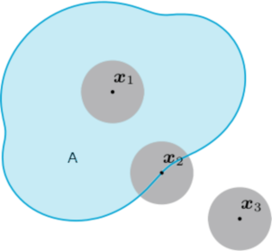
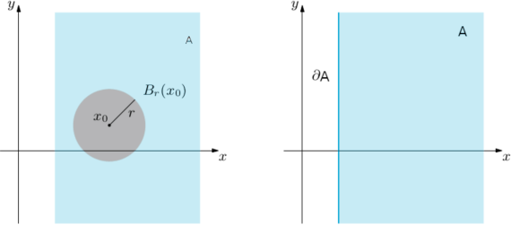

Topology of ℝn
In calculus of a real variable, one does not study functions defined over a discrete set of real values because the notions behind continuity and differentiability do not make sense over such sets. Instead, one often assumes the function is defined over some interval. Similarly, for the analysis of functions ℝn to ℝm, one does not study functions defined from any subset of ℝn into ℝm. One typically considers functions defined over what is called an open set in ℝn, a notion we define now:
Definition 3.1.1. The open ball around x0 of radius r is the set
Br (x0) = {x ∈ ℝn : |x − x0| < r}
A subset U ⊂ ℝn is called open if for all x ∈ U there exists an r > 0 such that Br (x) ⊂ U. □
Intuitively speaking, the definition of an open set U in ℝn implies that at every point p ∈ U it is possible to “move” in any direction by at least a little amount ε and still remain in U. This is why, when studying the analysis of functions from ℝn to ℝm, we narrow our attention to functions F : U → ℝm, where U is an open subset of ℝn.
Clearly, discrete sets are not open. A simple example of an open set in ℝ is all points x for which a < x < b for two real numbers a and b. But the set of points for which a ≤ x < b is not open, because the point x = a does not have a neighborhood entirely contained in the set: somep oint of any neighborhood of x = a must be less than a and therefore outside the set.
Definition 3.1.2. Let A ⊆ ℝn. A point x ∈ A si dice:
punto interno a A se esiste un intorno Ur(x) contenuto in A.
punto esterno a A se è un punto interno al complementare ∁A = ℝn \ A.
boundary point of E if every circular neighborhood Ur(x0, y0) contains at least a point of E and a point of the complementar of E. The border of E, indicated as ∂E, is defined as the set of boundary points of E.

Definizione 3.1.2 Un punto (x0, y0) ∈ A, si dice di frontiera per A se ogni suo intorno Ur(x0,y0) contiene almeno un punto di A e un punto del complementare di A. Si dice frontiera o bordo di A, e si indica con ∂A, l'insieme dei punti di frontiera di A. Si dice chiusura di A e si indica con A, l'insieme A ∪ ∂A. □
Definizione 3.1.3 Si dice interno di A, e si indica con Å, l'insieme A \ ∂A, costituito dai punti interni di A. In particolare si ha sempre:
Å ⊆ A ⊆ A □
Ad esempio se A:= {3, 4, 6}, si ha Å = ∅ e lo stesso per ogni insieme di ℝn costituito da un numero finito di elementi.
Definizione 4.1. Un insieme A si dice aperto se ogni suo punto è interno, cioè se Å = A, ossia esiste un intorno circolare Ur(x0,y0) cotenuto in A. Si dice chiuso, se il suo complementare è aperto cioè se A = A.
Examples 3.1.4
The sets ℝn and ∅ are at the same time open and closed (e sono gli unici sottoinsiemi di ℝn con tale proprietà). La loro frontiera è vuota.
Il semipiano A = {(x, y) ∈ ℝ2: x > 1} è aperto. Infatti, preso (x0, y0) ∈ A, si verifica facilmente che ogni intorno di raggio r ≤ x0 - 1 è contenuto in A (si veda la Figura 4.4, a sinistra). La sua frontiera ∂A è la retta di equazione x = 1 (parallela all’asse delle y), come illustrato nella Figura 4.4, a destra. Il suo complementare ∁A = {(x, y) ∈ ℝ2: x ≤ 1} è dunque chiuso. In generale ogni semipiano A ⊂ ℝ2 definito da una disuguaglianza del tipo
ax + by > c oppure ax + by < c
con a e b non entrambi nulli, è aperto mentre se è definito da una disuguaglianza del tipo
ax + by ≥ c oppure ax + by ≤ c
è chiuso. In entrambe le situazioni, la frontiera ∂A è la retta di equazione ax + by = c.

Definizione 3.1.5. A point x ∈ ℝn is said accumulation point of A (x può appartenere o non appartenere ad A) se ogni suo intorno contiene almeno un punti di A diverso da x, ossia
∀r > 0, (Ur (x) \ {x}) ∩ A ≠ ∅
Un punto x ∈ A dicesi punto isolato di A se esiste un intorno Ur (x) che non contiene punti di A diversi da x, ossia
∃r > 0 Ur (x) \ {x} ∩ A = ∅
vale a dire
∃r > 0, Ur (x) ∩ A = {x}
Osserviamo che ogni punto interno di A è punto di accumulazione di A, mentre nessun punto esterno può essere punto di accumulazione di A. Un punto di frontiera di A è o punto di accumulazione di A (appartenente o meno a A) o un punto isolato di A. Viceversa, un punto di accumulazione o è interno a A o è punto di frontiera di A, non isolato. Un punto isolato è necessariamente un punto di frontiera.
Definiamo ora alcune proprietà degli insiemi che saranno utili nel seguito.
Definizione 3.1.6 Un dominio è la chiusura di un insieme aperto. Pertanto un dominio è un insieme chiuso, ed è unione di un insieme aprto e della sua frontiera. □
Ad esempio, un cerchio chiuso di ℝ2 è un dominio, mentre l'insieme unione di un cerchio chiuso e di un punto isolato esterno al cerchio non è un dominio di ℝ2.
Definizione 3.1.7 Un insieme A dicesi limitato se esiste un numero reale M > 0 tale che
||x|| ≤ M, ∀x ∈ A,
ossia A è contenuto in un intorno chiuso UM (0) dell’origine. □
Connected sets
An open set of A ⊆ ℝn is said connected if there aren't two disjoint and non-empty open sets of ℝn whose union is the set A.
Definition 3.1.8. An open set of A ⊆ ℝn is said connected if the conditions
A1, A2 open sets of ℝn, A1 ∩ A2 = ∅, A1 ∪ A2 = A
imply that either A1, A2 is the empty, set. □
Definizione 3.1.9. Un insieme A dicesi compatto se è chiuso e limitato. □
Definizione 3.1.10 Un insieme A si dice connesso (per archi) se per ogni coppia di punti S,T ∈ A esiste un arco di curva continuo in A, che ha per estremi S e T. □
Definition 3.1.11 An open connected set A ⊆ ℝn is simply connected if the trace Γ of any arc in A can be deformed with continuity to a point, always staying within A. □
Examples of simply connected sets.
The Euclidean plane ℝ2 is simply connected, but ℝ2 minus the origin (0, 0) is not. If n > 2, then both ℝn and ℝn minus the origin are simply connected. Observe, though that while an annulus (the region between two concentric circles of different radii) in the plane is not simply connected, a spherical shell in dimention n ≥ 3 is;
A sphere is simply connected because every loop can be contracted (on the surface) to a point;